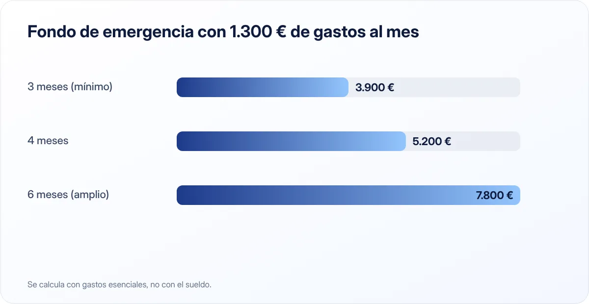

Fondo de emergencia: cuánto necesitas y dónde guardarlo
Es el primer escalón de cualquier plan financiero: un colchón que te permite afrontar un imprevisto sin tirar de tarjeta ni pedir prestado.

Puntos clave
- Un fondo de emergencia cubre entre 3 y 6 meses de gastos esenciales, no de sueldo.
- Debe estar disponible en el día y sin riesgo: cuenta remunerada o de ahorro, nunca en bolsa.
- Constrúyelo poco a poco con una transferencia automática el día de cobro.
¿Qué es un fondo de emergencia?
Es una cantidad de dinero apartada exclusivamente para imprevistos: una avería del coche, una reparación en casa, un tratamiento dental, un despido o una baja larga. No es ahorro para vacaciones ni para la entrada de un piso. Su única función es que un mal momento no se convierta en una deuda.
Sin este colchón, cualquier sorpresa acaba en la tarjeta de crédito, en un préstamo rápido o en pedir dinero a la familia. Con él, una avería de 800 € es una molestia, no una crisis.
¿Cuánto dinero necesitas?

La recomendación más extendida es reunir entre 3 y 6 meses de gastos esenciales. Fíjate en el matiz: gastos, no sueldo. Si cobras 2.000 € pero tus gastos imprescindibles (vivienda, suministros, comida, transporte, seguros, cuotas de préstamos) suman 1.300 €, tu objetivo está entre 3.900 € y 7.800 €.
¿Más cerca de 3 o de 6 meses?
Depende de lo estable que sea tu situación:
| Situación | Meses recomendados |
|---|---|
| Funcionario o contrato indefinido, sin hijos, pareja con ingresos | 3 |
| Contrato indefinido con hijos o un solo sueldo en casa | 4–6 |
| Contrato temporal, sector inestable o vivienda en propiedad | 6 |
| Autónomo o ingresos variables | 6–12 |
Si eres autónomo, piensa además en los meses en los que facturas poco: tu fondo debe aguantar tanto un imprevisto como una mala racha de clientes.
¿Dónde guardarlo?
Tu fondo de emergencia tiene que cumplir tres condiciones: seguro, disponible y separado.
- Seguro: no puede perder valor justo cuando lo necesites. Por eso no debe estar invertido en bolsa, fondos de renta variable ni criptomonedas. Si llega una crisis, es probable que pierdas el empleo a la vez que caen los mercados.
- Disponible: tienes que poder usarlo en uno o dos días como mucho. Un depósito a plazo fijo con penalización por cancelar no es ideal para todo el fondo.
- Separado: si está en la misma cuenta que tus gastos diarios, acabarás usándolo sin darte cuenta.
Las opciones más habituales son:
- Cuenta remunerada o de ahorro en una entidad distinta a la de tu nómina. Te da algo de interés y te obliga a hacer una transferencia para usarla, lo que frena los impulsos.
- Combinación cuenta + depósito. Si tu fondo es grande, puedes tener uno o dos meses en la cuenta y el resto en depósitos cortos escalonados.
En España, los depósitos en entidades adheridas al Fondo de Garantía de Depósitos están cubiertos hasta 100.000 € por titular y entidad. Comprueba siempre que tu banco esté adherido, especialmente si es una entidad extranjera que opera en España. Si quieres comparar opciones, mira nuestra guía sobre cuentas remuneradas y depósitos.
Cómo construirlo desde cero
Reunir varios miles de euros asusta. La clave es dividir el objetivo en metas pequeñas.
1. Primer objetivo: 1.000 €
Este primer escalón ya cubre la mayoría de averías y gastos inesperados. Si ahorras 100 € al mes, lo tendrás en diez meses; con 200 €, en cinco.
2. Segundo objetivo: un mes de gastos
Una vez superado el primer escalón, apunta a cubrir un mes completo de gastos esenciales.
3. Objetivo final: de 3 a 6 meses
Sigue aportando hasta llegar a la cifra que calculaste antes. Cuando lo consigas, redirige esa transferencia mensual a otros objetivos.
Trucos que aceleran el proceso
- Automatiza. Programa la transferencia el mismo día que cobras.
- Destina ingresos extra. Pagas extra, devolución de la Renta o un trabajo puntual pueden adelantar meses de ahorro.
- Vende lo que no usas. Ropa, electrónica o muebles parados pueden sumar unos cientos de euros.
- Revisa gastos fijos. Cambiar de tarifa de móvil o cancelar suscripciones libera dinero cada mes.
Un fondo de emergencia no se mide por lo que rinde, sino por la tranquilidad que te da. Que esté seguro y a mano es más importante que su rentabilidad.
¿Qué cuenta como emergencia?
Pon reglas antes de necesitarlo. Una emergencia es algo inesperado, necesario y urgente. Una lavadora rota lo es; unas rebajas, no. Las vacaciones de verano tampoco: son previsibles y deberían tener su propio ahorro.
Si usas el fondo, tu prioridad siguiente es volver a llenarlo. Retoma las aportaciones cuanto antes, aunque sean menores.
En resumen
Calcula tus gastos esenciales, multiplica por 3 a 6 meses según tu estabilidad, guarda el dinero en una cuenta separada y sin riesgo, y llénala poco a poco con una transferencia automática. Es la base sobre la que se construye todo lo demás, incluido empezar a invertir.
Fuentes consultadas
Este artículo es informativo y no constituye asesoramiento financiero, fiscal ni jurídico personalizado. Las cifras son orientativas y pueden cambiar; consulta las fuentes oficiales y, si lo necesitas, a un profesional. Cómo elaboramos nuestras guías.